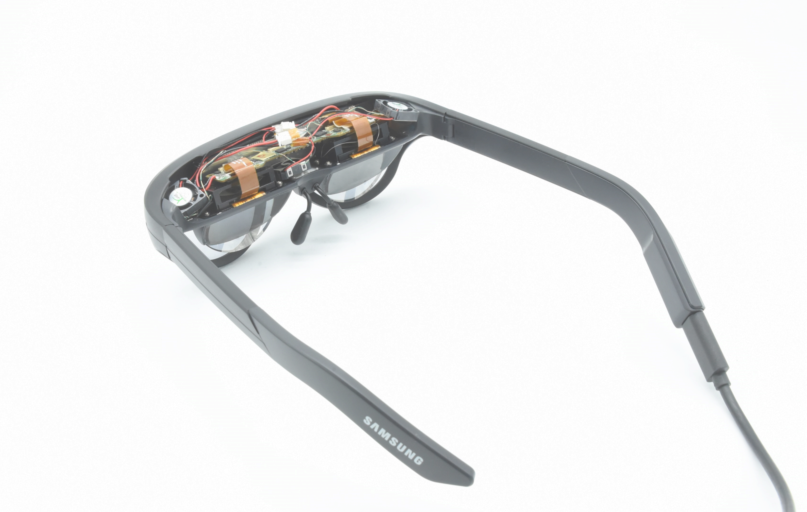
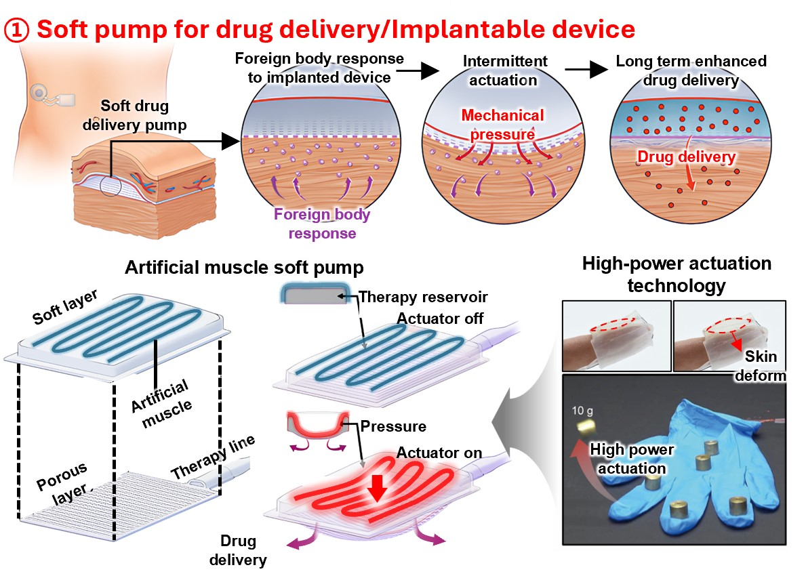

Compliant Advanced
Symbiotic Actuators Lab
We are a research group focusing on human-robot interaction, nature-inspired mechanisms, and the development of first-of-its-kind smart actuators.
Explore Our Projects



Latest News
2026
Bhamla Lab, Colorado / KSME Conference talk, Gyeongju
2025
Published "Rhagocake" & Award for Science Paper, Ajou Univ.
2024
Successfully completed PhD graduation at Ajou Univ.
Learn About Me
Hello! I am a passionate researcher specializing in bio-inspired robotics, compliant mechanisms, and smart actuator technologies. My goal is to bridge the gap between biological inspiration and real-world engineering solutions to create next-generation robotic systems.